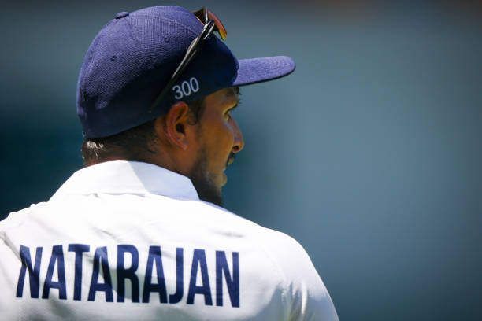

About the Event
Guest of honor: Indian cricket player,T.Natarajan
The Annual Sports Meet 2024 was held on 24th January 2024, marking a spectacular and memorable event for the participants and attendees. The event was organized with great enthusiasm and spirit, celebrating the importance of sports in fostering physical fitness, teamwork, and sportsmanship.
The highlight of the event was the presence of the esteemed Indian cricket player, T. Natarajan, who graced the occasion as the chief guest. His presence brought immense excitement and motivation to the young athletes, inspiring them to pursue their goals with determination and dedication. T. Natarajan's journey from humble beginnings to achieving success on the international cricketing stage served as a powerful example of perseverance and hard work.
The event included a series of athletic competitions, where students showcased their talent and sportsmanship. The day was filled with energy and excitement, as participants competed in various track and field events, including sprints, relays, and long jumps.
The most anticipated moment of the day was the prize distribution ceremony, which took place in the presence of T. Natarajan. The winners of the various sports categories were awarded trophies and medals, recognizing their exceptional efforts and achievements. T. Natarajan distributed the prizes to the deserving athletes and congratulated them for their dedication and hard work.
.jpg)
Guest speech
T. Natarajan, an Indian cricketer, has become an inspiring figure, especially for those who seek motivation and the power of perseverance. His life story exemplifies the struggles, sacrifices, and triumphs of someone who came from humble beginnings to achieve success in the competitive world of cricket. Natarajan was born in a small village in Tamil Nadu, and his early life was marked by financial challenges and limited resources. Despite these hardships, his passion for cricket remained unwavering.
Natarajan's journey is a testament to the importance of hard work, dedication, and a strong belief in one’s abilities. He started his career as a left-arm fast bowler with limited facilities and exposure but never let that deter him. His breakthrough came after years of toil and persistence, eventually earning him a spot in the Indian national cricket team. His story highlights how success is not always about instant recognition but about continuous improvement, even in the face of adversity.
One of the most motivational aspects of Natarajan's speech is his emphasis on self-belief and consistency. He speaks about how setbacks, such as injuries and doubts from others, became stepping stones rather than obstacles. His rise to fame, especially after his remarkable performance in India's 2020-21 tour of Australia, stands as a reminder that opportunities often come when one is prepared, and that success is the culmination of years of hard work.
Moreover, Natarajan encourages people to believe in their own potential, no matter where they come from or how difficult the circumstances may seem. He shares that it’s essential to stay focused on the goal and trust the process. His words resonate with those who may feel disheartened by their current situation, as he demonstrates that with persistence and dedication, dreams can come true.
